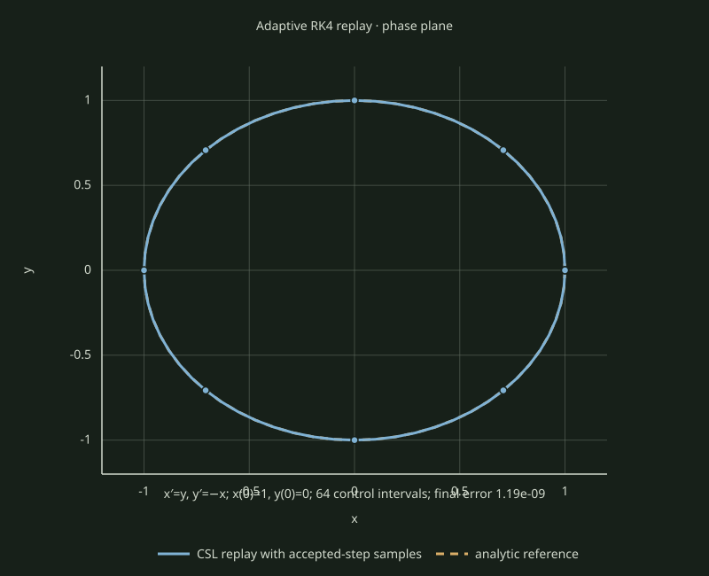

Visual examples / Numerical integration
Adaptive RK4 replay of a two-state oscillator
This 2D example integrates x′ = y, y′ = −x from
(x,y)=(1,0) through one full period. The blue curve and markers are
produced by the CSL adaptive RK4 step-doubling replay. The dashed amber curve is
the independent analytic solution (cos t, −sin t).

Reproduce the saved data
The source is the installed public-client example. The raw state and analytic-reference rows are available as CSV.
cmake -S examples -B build/examples -DCMAKE_PREFIX_PATH=<CSL-install-prefix>
cmake --build build/examples --target adaptive_ode_replay
build/examples/adaptive_ode_replay > docs/examples/adaptive-ode-replay.csv
python3 scripts/reports/render_adaptive_ode_example.py \
--record docs/examples/adaptive-ode-replay.csv \
--output docs/examples/adaptive-ode-replay.svgThis demonstrates a supported numerical replay method. It is not a control optimization, reachable-set boundary, B04 reproduction, or optimality claim. The repository remains pre-release; use a local CSL install built from the reviewed source.